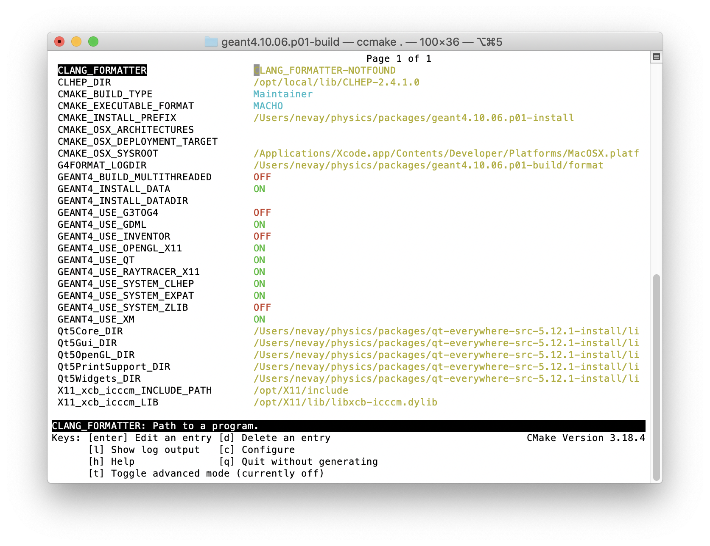
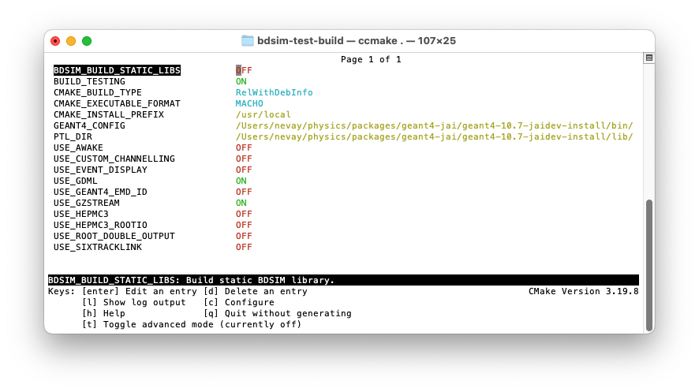
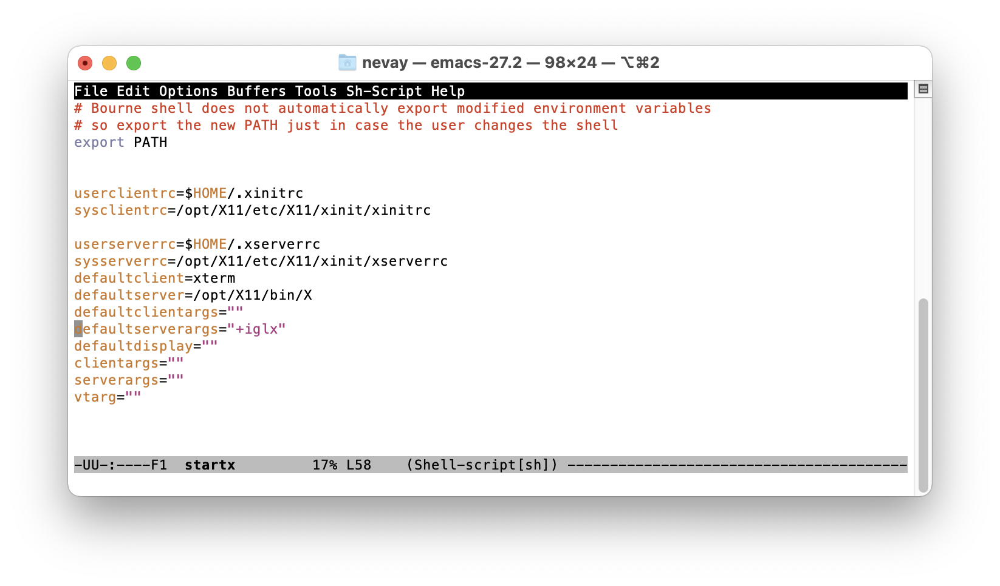

Installation
Supported Systems
BDSIM is developed and used on Mac OSX and (Scientific) Linux. It can be used on Windows through some virtualisation technology (e.g. a virtual machine, docker, or Cygwin, X11 and CVMFS access). See BDSIM on Windows for Windows setup.
Tested systems: Mac OS 11, 12, both Intel & M1 (ARM64); Centos7, SLC6. A full list can be found in Tested Platforms.
Different methods of installation are described in Solutions.
Source Code
The source code for BDSIM can be obtained from the git repository and is available under the GPLv3 licence (see Licence & Disclaimer). If using the source code, then the user must compile it on their system and must have Geant4, CLHEP and ROOT already present.
Obtaining via the git repository allows easier updates in future as the user can ‘pull’ the latest version and then recompile without having to create a separate copy.
To download the source from the git repository, use the command:
git clone https://github.com/bdsim-collaboration/bdsim.git
or (if you have an SSH key setup with github):
git clone git@github.com:bdsim-collaboration/bdsim.git
This will create a directory called bdsim, inside which all the code, examples
and documentation is provided. BDSIM source code versions can be downloaded as zipped
archives from the git repository website:
https://github.com/bdsim-collaboration/bdsim/tags
Note
If you download a tag, this is not necessarily a clone of the git repository and should not be used as such for development. the repository should be cloned explicitly.
Solutions
Pre-Compiled Libraries
These are not yet provided but will be shortly.
Public Installation on CVMFS
If you have access to CVMFS (CERN Virtual Machine File System) as your university or lab is linked in some way with CERN or makes use of CVMFS, you can find builds of BDSIM there. CVMFS is a file system accessible over the internet, and in a certain folder we have some pre-made BDSIM libraries. These use CERN software for the all the dependencies also available on CVMFS. Currently, only Centos7 (CC7) builds are provided.
CentOS 7 with CVMFS Access
If you have a machine running CERN CentOS 7 and with access to the CVMFS file system (CERN Virtual Machine File System), you can access an installation of bdsim at:
/cvmfs/beam-physics.cern.ch/bdsim/x86_64-centos7-gcc11-opt
You can source a script for a specific version of Geant4 + BDSIM. e.g.
source /cvmfs/beam-physics.cern.ch/bdsim/x86_64-centos7-gcc11-opt/bdsim-env-v1.7.2-g4v10.7.2.3-ftfp-boost.sh
Tagged versions (e.g. v1.7.2) will remain even when newer versions of BDSIM are provided.
“develop” versions can change without notice.
The scripts require BASH (not ZSH) and currently only work on Centos7 as per the name of the directory.
Each provides: BDSIM, ROOT, Geant4, CLHEP, Python3, IPython, pybdsim, pymadx, pymad8 and pytransport.
Each setup script includes Geant4, ROOT, CLHEP, IPython, Python, and all dependencies. This is based on CERN’s LCG software release (currently #100 for BDSIM). Each build is in a directory with the naming convention:
bdsim-<version>-g4<g4version>.sh
Optional BDSIM-group patches to Geant4 are represented by an extra patch number (e.g. 10.7.1.1 for our patch #1 on 10.7.1). The contents of the patches are documented in the build directory in a directory called “patches” as patch files. These are the patches that were applied to the public source code. Each directory has a text file in it named with the time of the build and contains any options used to configure the software so that anyone could reproduce the build.
This may take some time the first time it is used (up to a minute or two), but CVMFS is highly efficient at caching files and it will subsequently be much faster.
Note
When browsing CVMFS, you may not see the directory beam-physics.cern.ch. It is there though.
Type the full path and it will be accessible. Once inside this directory (beam-physics.cern.ch)
you will be able to browse normally. CVMFS doesn’t show directories the local computer has
never visited before even though they are accessible.
Note
MacOS and X11 and 3D visualisation. If using the visualiser on a Centos7 machine remotely (e.g. CERN’s lxplus) over X-windows from a Mac, you may find that the whilst the visualiser window generally works, the actual visualisation itself is missing. This is because MacOS, by default, blocks OpenGL over X11. This should be re-enabled. See XWindows With MacOS.
Compilation From Source
BDSIM source code can be downloaded and then compiled. For this, you need a compiler to be available as well as several other libraries. Most of these can be found through a package manager such as YUM, APT, MacPorts or HomeBrew. However, for Geant4, we recommend compiling it yourself for the best options compatible with BDSIM. See:
BDSIM on Windows
BDSIM is available on Windows 10 through installation on the Windows Subsystem for Linux (WSL) which is downloadable from the Windows store. We currently advise that you should only install BDSIM on WSL 1 as difficulties have been encountered in installing BDSIM’s dependencies and visualising GUIs with X servers on WSL 2.
An alternative is to use DockerDesktop and build a docker image - instructions below - see Docker.
A number of Linux distributions are available, however BDSIM installation has only been tested on the Ubuntu distribution at present. Please note that we do not regularly test BDSIM on the Windows subsystems. Follow the guide on the Microsoft website for installing the subsystem.
To install BDSIM on the subsystem, follow the standard installation guide below. An X server is required to view the
BDSIM visualiser from the Linux subsystem. We recommend installing the XMing display server to your Windows 10 machine;
to view windows with XMing you will need to run the command export DISPLAY=:0 in the Linux Bash environment.
The command should be added to your .bashrc or profile so that it’s loaded automatically every time.
Docker
Docker is a virtualisation tool that puts software in a ‘container’. This can be run independently on an operating system and requires fewer resources than a virtual machine. It therefore allows us to use say BDSIM a Centos7 container on a Mac or Windows machine.
The initial setup takes about 30 minutes, but after that it is nearly instantaneous to start.
A prebuilt image can be downloaded and run on your computer. First, donwload and install
Docker Local Build
Included with BDSIM we have a ‘docker file’ that docker can follow to build an image on your computer. This contains instructions about getting Centos, installing various packages and compiling Geant4 and BDSIM. The docker file is a text file that one can read and use as a set of instructions to follow on your own system should you wish - of course not a literal set of copy-and-paste instructions as it uses some docker commands.
To use this, do the following:
Download the DockerDesktop application (e.g. https://www.docker.com/products/docker-desktop).
Clone the BDSIM git repository:
git clone https://github.com/bdsim-collaboration/bdsim.git.In a terminal (unix or Cygwin), go to
bdsim/building/docker.Use the docker build script
source build-centos-bdsim.sh- this may take 20 mins. (*)Adapt and use the run script
run-centos-bdsim.shwhich is made for Mac / unix.
The last step can commonly be made into an alias in your profile. On the developer’s Mac, this is:
alias bdsimdocker="docker run -t -i -v `pwd`:/hostfs -e DISPLAY=`ipconfig getifaddr en0`:0 --rm bdsim bash
This will start a terminal prompt that is a BASH shell ‘inside’ the container, so Centos7, with
everything ready to go and the command bdsim available.
Note
(*) The command in this script is a docker command and can be used in Windows.
Some explanation of the contents of the run script. For a Mac, this reduces (removing the comments) to:
DV=`ipconfig getifaddr en0`
docker run -t -i -v `pwd`:/hostfs -e DISPLAY=$DV:0 --rm bdsim bash
For docker to send an X-window to the host operating system, it uses the IP address of the computer. The first command gets this (on a Mac). The second command runs docker and links the display. The image is called “bdsim” here as per the build script, but it may also be referred to by its docker hexadecimal image name.
The -v syntax work as -v <host_dir_abs_path>:<container_dir_abs_path>.
Basic Docker Commands
docker image lsdocker container lsdocker run -t -i --rm <image_name> bash
X11 Notes
Whilst the docker image will almost certainly work without problem, it is more common to have some issues with the visualiser, which requires sending the window by X11 (‘xwindows’). A few notes:
On a Mac, you may have to do
xhost +to allow X11 connections over the network.On a Mac, you may have to set once
defaults write org.xquartz.X11 enable_iglx -bool true.See XWindows With MacOS.
Apptainer (formerly Singularity)
Apptainer (formerly known as singularity) is a container system similar to Docker. A key difference is that apptainer does not need administrator (root) access to run and therefore can be used on institute-provided machines such as lxplus at CERN for example.
Currently, the apptainer containers are built from the docker images. BDSIM can be run as follows:
apptainer run docker://jairhul/centos7-geant4v10.7.4-environment bash
Initially, this will take some time to download and convert to the apptainer format (e.g. 1-2 hours). After this initial step, it will run nearly instantly.
Requirements & Environment
A recent compiler with full C++11 support. Proven compiler versions are GCC 4.9 or higher, or clang 6 or higher.
CMake 3.7 or higher (Geant4.10.2 onward requires CMake 3.3 or higher).
CLHEP 2.1.3.1 or higher, see also CLHEP Installation Guide. Latest recommended but must be compatible with Geant4 version.
Optional - Python (>=3.6) for Python utilities and easy data loading with ROOT.
ROOT 6.0 or higher, for output & analysis compiled with Python3 support.
Optional - Qt5 libraries for the best Geant4 visualiser (Qt6 not supported in Geant4)
Optional - Xerces-C++ 3.2 XML library for GDML geometry file loading in Geant4.
Geant4 - version 4.10 or higher (latest patch of that release). Recommend 10.7.p04 or 10.4.p03 (for LHC energies). See Geant4 Installation Guide
Flex 2.5.37 or higher.
Bison 2.3 or higher.
Optional - HepMC3 for loading event generator output.
Note
These are listed in the correct order of installation / requirement.
For nice analysis and use of pybdsim for model conversion, we recommend Python 3 series with matplotlib and numpy. ROOT should be installed with Python support in this case and with the same Python installation as will be used with the Python utilities.
Geant4, CLHEP and ROOT Versions
We have found some problems with certain versions of software and these should be avoided. Generally, we recommend the latest patch version of Geant4. These are the problems we have found:
Geant4 10.3.0 - excessively long overlap checking - 15 mins per solid vs normal 40ms.
Geant4 10.3.pX - generic biasing has no effect - same code works in every other version.
Geant4 10.4.0 - crash within constructor of G4ExtrudedSolid used extensively in BDSIM.
Geant4 10.5.0 - the cashkarp integrator for fields will always crash. Events are not independent in rare occasions because of the magnetic field handling.
Geant4 10.5.pX - bug in G4Extruded solid may occasionally lead to crashes depending on the geometry involved.
Geant4 10.5 onwards - diffractive proton physics on light target nuclei is disabled by default (on going fix).
Geant4 11.0 - Bragg peaks are wrong from carbon ions in water.
The authors typically use Geant4 10.4.p03 or Geant4.10.7.p01 for physics results production.
Note
CLHEP 2.4.4.1 is required for Geant4 10.7 onwards as the SI units were updated to SI2019. Therefore, we should also be careful about using earlier versions of Geant4 with this version of CLHEP depending on how sensitive your simulation is. Nominally, it should make a negligible difference.
Geant4 Environment
Note: even though installed, the Geant4 environmental variables must be available. You can test this in a terminal with:
echo $G4 <tab>
$G4ABLADATA $G4NEUTRONHPDATA $G4RADIOACTIVEDATA
$G4LEDATA $G4NEUTRONXSDATA $G4REALSURFACEDATA
$G4LEVELGAMMADATA $G4PIIDATA $G4SAIDXSDATA
If these do not exist, please source the Geant4 environmental script
before installing BDSIM and each time before using BDSIM. It is common
to add this to your .bashrc or profile so that it’s loaded automatically
every time:
source path/to/geant4/installation/bin/geant4.sh
Compilation Environment Setup
The following sections detail the setup process for different operating systems.
Mac OSX Generally
In this order:
XCode should be installed.
XCode command line tools should be installed (
xcode-select --install).XCode should be opened at least once and the license terms accepted.
XQuartz should be installed - see https://www.xquartz.org.
The make command is available in the terminal.
We recommend obtaining Requirements & Environment using either HomeBrew or MacPorts package managesr, although they can be obtained both through other package managers and by manually downloading, compiling and installing the source for each.
For Homebrew you can do:
brew install root6
brew install xerces-c flex bison clhep qt@5
For HomeBrew, you should use a virtual env for python and then should install any Python packages through pip:
pip install matplotlib numpy
To setup a virutal environment for Python, you can do:
python3 -m venv /path/to/new/virtual/environment
source <venv>/bin/activate
Explicitly:
python3 -m venv ~/venv/py311
Edit .profile and add:
source ~/venv/py311/bin/activate
For MacPorts you can do:
sudo port install root6 +python39
sudo port install xercesc3 flex bison clhep qt5
sudo port install py39-matplotlib py39-numpy
It is best to install Geant4 manually to ensure you use the system CLHEP option (required by BDSIM for strong reproducibility) as well as visualiser choices and GDML geometry loading.
As of May 2021, CLHEP on macports is not 2.4.4.1, therefore if Geant4 10.7 is used, CLHEP should be setup manually.
Linux Generally
Install the Requirements & Environment preferably with a package manager.
Older versions of Geant4 can be downloaded from their archive . For Scientific Linux 6 or modern Linux versions, we recommend the latest version of Geant4. Note: the required compiler version (GCC 4.9) is more modern than the default one (GCC 4.4) on SL6. You can check the compiler version with:
gcc --version
CLHEP Installation Guide
If not installed with a package manager (MacPorts, HomeBrew, yum), download CLHEP from the CLHEP website.
Move and unpack to a suitable place:
tar -xzf clhep-2.3.1.1.tgz
cd 2.3.1.1
Make build directory:
mkdir build
cd build
cmake ../CLHEP
Adapt parameters if needed with:
ccmake .
Make and install:
make
sudo make install
Geant4 Installation Guide
Recommend using Geant4.10.4.p03, or 10.6.p03, or 10.7
Do not recommend using Geant4.10.5 and Geant4.10.5.p01
BDSIM builds with most recent versions of Geant4 (version 4.10 onwards). You can usually get Geant4 through a package manager such as MacPorts or HomeBrew, but often a manual installation is more flexible to allow choice of visualiser and use of GDML (necessary for external geometry). For manual installation, download the latest patch version from the Geant website. Move and unpack to a suitable place
tar -xzf geant4.10.6.p03.tar.gz
ls
geant4.10.6.p03
Make a build and installation directory outside that directory
mkdir geant4.10.6.p03-build
mkdir geant4.10.6.p03-install
Configure Geant4 using CMake
cd geant4.10.6.p03-build
cmake ../geant4.10.6.p03
At this point it’s useful to define the installation directory for Geant4 by modifying the CMake configuration as generally described in Configuring the Build.
ccmake .
It is useful to change a few options with Geant4 for practical purposes.
{kind=link}

Option |
Description |
CMAKE_INSTALL_PREFIX |
Useful to specify a known folder to install to. |
GEANT4_BUILD_MULTITHREADED |
OFF - BDSIM does not support this yet. |
GEANT4_INSTALL_DATA |
ON - otherwise Geant will try to download data dynamically, as it’s required during the simulation and it may not be possible to run offline. |
GEANT4_USE_GDML |
ON - for external geometry import. |
GEANT4_USE_OPENGL_X11 |
ON - basic visualiser. |
GEANT4_USE_QT |
ON - the best and most interactive visualiser. Needs Qt to be installed |
GEANT4_USE_SYSTEM_CLHEP |
ON - must be on so both Geant4 and BDSIM use the same CLHEP library. Therefore, there’s only one random number generator and simulations have strong reproducibility. |
GEANT4_USE_SYSTEM_ZLIB |
OFF - easier if we use the Geant4 internal version. |
GEANT4_USE_RAYTRACER_X11 |
ON - The most accurate visualiser, but relatively slow and not interactive. Useful for promotional materials. |
GEANT4_USE_XM |
ON - similar to Qt and the one to use if Qt isn’t available. Needs motif to be installed. |
Warning
Make sure GEANT4_BUILD_MULTITHREADED is off since this is currently not supported.
Note
The CLHEP option is required. The GDML and QT options are strongly recommended. Others are to the user’s preference.
Once the installation directory is set, press c to run the configuration
process, and when complete, press g to generate the build. If g is not an
available option, then continue to press c until it becomes available. This
typically takes two or three times - it is due to dependencies being dependent on
other dependencies. Geant4 can then
be compiled
make
Note: Geant4 can take around 20 minutes to compile on a typical computer. If your computer has multiple cores, you can significantly decrease the time required to compile by using extra cores
make -jN
where N is the number of cores on your computer [1]. Geant4 should
then be installed
make install
Note: if you’ve specified the directory to install, you will not need the sudo
command. However, if you’ve left the settings as default, it’ll be installed
in a folder that requires sudo permissions such as /usr/local/.
IMPORTANT - you should source the Geant4 environment each time before running BDSIM, as this is required for the physics models of Geant4. This can be done using
source path/to/geant4.10.6.p03-install/bin/geant4.sh
It may be useful to add this command to your .bashrc or profile script.
Compiling BDSIM
Once ready, make a directory outside the BDSIM source directory to build BDSIM in:
ls
bdsim
mkdir bdsim-build
ls
bdsim bdsim-build
It is important that the build directory be outside the source directory, otherwise trouble may be encountered when receiving further updates from the git repository. From this directory use the following CMake command to configure the BDSIM installation:
cd bdsim-build
cmake ../bdsim
This typically produces the following output, which is slightly different on each computer:
-- The C compiler identification is AppleClang 12.0.5.12050022
-- The CXX compiler identification is AppleClang 12.0.5.12050022
-- Detecting C compiler ABI info
-- Detecting C compiler ABI info - done
-- Check for working C compiler: /Applications/Xcode.app/Contents/Developer/Toolchains/XcodeDefault.xctoolchain/usr/bin/cc - skipped
-- Detecting C compile features
-- Detecting C compile features - done
-- Detecting CXX compiler ABI info
-- Detecting CXX compiler ABI info - done
-- Check for working CXX compiler: /Applications/Xcode.app/Contents/Developer/Toolchains/XcodeDefault.xctoolchain/usr/bin/c++ - skipped
-- Detecting CXX compile features
-- Detecting CXX compile features - done
-- Configuring BDSIM 1.6.0
-- Installation prefix: /usr/local
-- Build Type RelWithDebInfo
-- Compiler fully supports C++17 and prior versions
-- Looking for CLHEP
-- Found CLHEP 2.4.4.1 in /Users/nevay/physics/packages/clhep-2.4.4.1-install/lib/CLHEP-2.4.4.1/../../include
-- Looking for ROOT...
-- ROOT search hint from $ROOTSYS: /opt/local
-- Using root-config: /opt/local/bin/root-config
-- Found ROOT 6.24/00 in /opt/local/libexec/root6
-- ROOT compiled with cxx17 feature -> changing to C++17 for BDSIM
-- GDML support ON
-- Looking for pthread.h
-- Looking for pthread.h - found
-- Performing Test CMAKE_HAVE_LIBC_PTHREAD
-- Performing Test CMAKE_HAVE_LIBC_PTHREAD - Success
-- Found Threads: TRUE
-- Geant4 Use File: /Users/nevay/physics/packages/geant4-jai/geant4-10.7-jaidev-install/lib/Geant4-10.7.1/UseGeant4.cmake
-- Geant4 Definitions: -DG4UI_USE_TCSH;-DG4INTY_USE_XT;-DG4VIS_USE_RAYTRACERX;-DG4INTY_USE_QT;-DG4UI_USE_QT;-DG4VIS_USE_OPENGLQT;-DG4VIS_USE_OPENGLX;-DG4VIS_USE_OPENGL;-DG4VIS_USE_QT3D
-- G4_VERSION: 10.7.1
-- Found Doxygen: /opt/local/bin/doxygen (found version "1.9.1") found components: doxygen dot
-- Found BISON: /opt/local/bin/bison (found suitable version "3.7.6", minimum required is "2.4")
-- Found FLEX: /opt/local/bin/flex (found version "2.6.4")
-- Performing Test COMPILER_HAS_HIDDEN_VISIBILITY
-- Performing Test COMPILER_HAS_HIDDEN_VISIBILITY - Success
-- Performing Test COMPILER_HAS_HIDDEN_INLINE_VISIBILITY
-- Performing Test COMPILER_HAS_HIDDEN_INLINE_VISIBILITY - Success
-- Performing Test COMPILER_HAS_DEPRECATED_ATTR
-- Performing Test COMPILER_HAS_DEPRECATED_ATTR - Success
-- Looking for zlib
-- Using Geant4 built in zlib
-- Copying example directory
-- Found Sphinx: /opt/local/bin/sphinx-build
-- Found PY_sphinx_rtd_theme: /opt/local/Library/Frameworks/Python.framework/Versions/3.9/lib/python3.9/site-packages/sphinx_rtd_theme
-- Configuring done
-- Generating done
-- Build files have been written to: /Users/nevay/physics/reps/bdsim-test-build
CMake will search your system for the required dependencies. In the above example, this proceeded without any errors. In the case where a required dependency cannot be found, an error will be shown and CMake will stop. Please see Configuring the Build for further details on how to fix this and further configure the BDSIM installation.
You can then compile BDSIM with:
make
BDSIM can then be installed (default directory /usr/local) for access from anywhere on the system with:
sudo make install
To change the installation directory, see Configuring the Build.
From any directory on your computer, bdsim should be available.
At this point, BDSIM itself will work, but more environmental variables must be set to use the analysis tools (this is a requirement of ROOT). These can be set by sourcing the bdsim.sh shell script in the installation directory:
source <bdsim-install-dir>/bin/bdsim.sh
This can be added to your .profile or .bashrc file. The user
should adapt this if they use a C-shell.
Re-source your profile (or restart the terminal).
You should be able to execute
bdsim --helporrebdsim

If the analysis will be regularly used interactively, it is worth automating the library
loading in root by finding and editing the rootlogon.C in your
<root-install-dir>/macros/ directory. Example text would be:
cout << "Loading rebdsim libraries" << endl;
gSystem->Load("librebdsimLib");
gSystem->Load("libbdsimRootEvent");
Note
The file extension is omitted on purpose.
The absolute path is not necessary, as the above environmental variables are used by ROOT to find the library.
From the build directory you can verify your installation using a series of tests included with BDSIM (excluding long running tests):
ctest -LE LONG
Configuring the Build
To either enter paths to dependencies manually, or edit the configuration, the following
command will give you and interface to CMake (from the bdsim-build directory):
ccmake .
{kind=link}

You can then use up and down arrows to select the desired parameter and enter to edit it. If the parameter is a path, press enter again after entering the path to confirm.
Once the parameter has been edited, you can proceed by pressing c to run the configuration and if successful, follow this by g to generate the build. After configuring the installation, you should run:
make
make install
Note
If the default installation directory is used, you may need to use sudo before
this command. You can change the installation directory in the above ccmake
configuration to one that won’t require the sudo command. The variable
CMAKE_INSTALL_PREFIX should be changed.
Optional Configuration Options
BDSIM has a few optional configuration options. These can be specified with a value when running CMake by prefixing them with “-D”. The following options are available.
Option |
Description |
|---|---|
USE_AWAKE |
Use AWAKE model components. (default OFF) |
USE_BOOST |
Whether to link againt Boost library. (default OFF) This options enables the differential flux scoring feature available using the scorer type cellflux4d. |
USE_CUSTOM_CHANNELLING |
Use RHUL custom crystal channelling package in Geant4. Only if you have this package patched onto Geant4. |
USE_EVENT_DISPLAY |
Turn on or off event display. Requires ROOT EVE libraries and is an unmaintained work in progress. (default OFF) |
USE_GDML |
Control over use of GDML. On if Geant4 has GDML support. |
USE_GEANT4_EMD_ID |
If using RHUL Geant4 with EMD process with its own ID turn this on to uniquely identify that process in cross-section biasing. (default OFF) |
USE_GZSTREAM |
Control over using GZip library. (default ON) |
USE_HEPMC3 |
Whether to link against HepMC3. (default OFF) |
USE_HEPMC3_ROOTIO |
Whether HEPMC3 was built with ROOTIO on. (default OFF) |
USE_ROOT_DOUBLE_OUTPUT |
Whether to use double precision for all output. Note this will roughly double the size of the output files. Useful only for precision tracking tests using samplers. Note, data generated with this build cannot be used with a normal build with this turned off. (default OFF) |
BDSIM_BUILD_STATIC_LIBS |
Whether to build the static library in addition to the main shared one. Note, currently the executables will only ever be linked to the shared libraries - work in progress. (default OFF) |
Booleans can be specified with OFF or ON.
Examples:
cmake ../bdsim -DUSE_HEPMC3=ON
With HepMC 3.1.1 we find a compiler warning about an unused variable. This is harmless and on the HepMC3 side that we can’t change.
Giving CMake Hints for Packages
When configuring BDSIM, or any CMake package, we can give CMake hints on where to look for
packages. These can be given through the command line options at configuration time with
the general syntax -D<package-name>_DIR=/path/to/package/install-prefix. For example,
the following ones may be useful with BDSIM.
-DHepMC3_DIR-DGeant4_DIR-DCLHEP_DIR
Example:
cmake ../bdsim -DUSE_HEPMC3=ON -DHepMC3_DIR=/opt/local/share/HepMC3/cmake
Specifying a ROOT Installation
To specify a ROOT installation it is best to have source the <root-install-prefix>/bin/thisroot.sh.
This will set the environmental variable ROOTSYS. BDSIM will look for the program root-config
in the prefix given by ROOTSYS in the environment then use the ROOT installation according to that
root-config.
This can be overridden by specifying -DROOT_CONFIG_EXECUTABLE=/path/to/root-config when configuring
BDSIM. For example:
mkdir bdsim-build
cd bdsim-build
cmake ../bdsim -DROOT_CONFIG_EXECUTABLE=/Users/nevay/physics/packages/root-6.18.04-install/bin/root-config
The CMake configuration print out will show which ROOT installation is being used.
Advanced Configuration Options
These options are for developers of BDSIM. These may change without notice or cause unintended effects.
Option |
Description |
|---|---|
BDSIM_BUILD_TEST_PROGRAMS |
Whether to build a set of test executable programs. For developers. Also defines extra CTest tests. Default off. |
BDSIM_FINAL_INSTALL_DIR |
This path if set will used as the first vis macro path to be searched. Should be up to and including “bdsim”. Used in the case of a CVMFS build where the build is relocated. |
BDSIM_GENERATE_REGRESSION_DATA |
Whether to generate regression test data from the tests. |
BDSIM_REGRESSION_PREFIX |
Name prefix for all output files from regression test data. |
USE_DEBUG_NAVIGATION |
Extra print out (a lot) to understand navigation through the geometry. |
USE_FIELD_DOUBLE_PRECISION |
Use double precision for all field maps. |
USE_SIXTRACK_LINK |
Use experimental sixtrack link interface. Affects output. (default OFF) |
Environmental Variables
Some variables are required by ROOT to access the BDSIM classes but not by BDSIM itself.
These variables are set in the <bdsim-install-dir>/bin/bdsim.sh provided shell script.
We recommend adding this to your terminal profile:
source <bdsim-install-dir>/bin/bdsim.sh
Python Utilities
Quick setup: simply run
source pyutils.shfrom thebdsim/utilsdirectory.
The BDSIM Python utilities (pytransport, pymad8, pymadx, and pybdsim) all exist in separate git repositories in the following locations:
These should be downloaded and installed using pip by default for users.
If it is intended to edit these packages or add to them (always welcome!), then it
is preferable to clone the git repository and use the commands in the Makefile in each
one, such as pip install --editable . that allows the package to be registered
to your Python installation but it gets the files freshly each time from the git
repository folder upon restarting Python.
To switch between these modes, simply uninstall the utilities, then reinstall.
pip uninstall pybdsim
pip uninstall pymadx
pip uninstall pymad8
pip uninstall pytransport
Note
pybdsim depends on pymadx, pymad8, and pytransport, so if these are not already available it will get them from PyPi on the internet. To use multiple develop versions of these from local git repositories, install in the order: pytransport, pymad8, pymadx, then pybdsim.
Updating the Python Utilities
With pip you can see if packages are outdated with:
pip list -o
If you see pybdsim as an outdated package, you can do the following to update it:
pip install --upgrade pybdsim
Upgrading BDSIM
To update BDSIM when a new release is made, we recommend receiving updates through the git repository. To receive the latest version of the software, the user must ‘pull’ the changes from the git repository and then update the build.
Note
Assuming you have a BDSIM source directory (“bdsim”) that is a clone of the git repository and a separate build directory (“bdsim-build”) that is outside the source directory.
cd bdsim
git pull
You then have two options: 1) make a clean build or 2) update the current build. The first option is generally more robust and we recommend that. Both are described for completeness.
Clean Build
cd ../bdsim-build
rm -rf *
cmake ../bdsim
# do any configuration steps in ccmake .
make -j4
make install
If custom locations for various dependencies had to be specified with CMake for the initial configuration and compilation of BDSIM, these will have to be repeated (see Configuring the Build for details on using ccmake to do this).
Updated Existing Build
cd ../bdsim-build
cmake ../bdsim
make -j4
make install
Troubleshooting
Below is a list of possible encountered problems. If you experience problems beyond these, please contact us (see Support).
Mac OSX Mojave - OpenGL visualisations in Geant4 appear to be missing in a grey screen or worse, bits of the interface double size. The user must use Qt 5.12.1 or greater for these issues to be resolved. This issue is documented here: https://bugzilla-geant4.kek.jp/show_bug.cgi?id=2104
Visualisation does not work:
"parameter value is not listed in the candidate List."Check which graphics systems BDSIM has available. This is shown in the terminal when you run BDSIM
You have successfully registered the following graphics systems. Current available graphics systems are: ASCIITree (ATree) DAWNFILE (DAWNFILE) G4HepRep (HepRepXML) G4HepRepFile (HepRepFile) OpenGLImmediateQt (OGLI, OGLIQt) OpenGLImmediateX (OGLIX) OpenGLImmediateXm (OGLIXm, OGLI_FALLBACK, OGLIQt_FALLBACK) OpenGLStoredQt (OGL, OGLS, OGLSQt) OpenGLStoredX (OGLSX) OpenGLStoredXm (OGLSXm, OGL_FALLBACK, OGLS_FALLBACK, OGLSQt_FALLBACK) RayTracer (RayTracer) RayTracerX (RayTracerX) VRML1FILE (VRML1FILE) VRML2FILE (VRML2FILE) gMocrenFile (gMocrenFile)
If your favourite is not there check that Geant4 is correctly compiled with that graphics system. You will have to reconfigure Geant4 and install any necessary libraries (such as Qt or XMotif), then recompile Geant4, then recompile bdsim.
Huge print out and failure when trying to load data in Python:
In [1]: import pybdsim d = In [2]: d = pybdsim.Data.Load("run1.root") Error in cling::AutoloadingVisitor::InsertIntoAutoloadingState: Missing FileEntry for ../parser/beamBase.h requested to autoload type GMAD::BeamBase Error in cling::AutoloadingVisitor::InsertIntoAutoloadingState: Missing FileEntry for ../parser/optionsBase.h requested to autoload type GMAD::OptionsBase HeaderDict dictionary payload:33:10: fatal error: 'BDSOutputROOTEventHeader.hh' file not found #include "BDSOutputROOTEventHeader.hh" ^~~~~~~~~~~~~~~~~~~~~~~~~~~~~ Error in <TInterpreter::AutoParse>: Error parsing payload code for class Header with content: #line 1 "HeaderDict dictionary payload" #ifndef G__VECTOR_HAS_CLASS_ITERATOR #define G__VECTOR_HAS_CLASS_ITERATOR 1 #endif #ifndef __ROOTBUILD__ #define __ROOTBUILD__ 1 #endif #define _BACKWARD_BACKWARD_WARNING_H /* Beam Delivery Simulation (BDSIM) Copyright (C) Royal Holloway, University of London 2001 - 2020. This file is part of BDSIM. BDSIM is free software: you can redistribute it and/or modify it under the terms of the GNU General Public License as published by the Free Software Foundation version 3 of the License. BDSIM is distributed in the hope that it will be useful, but WITHOUT ANY WARRANTY; without even the implied warranty of MERCHANTABILITY or FITNESS FOR A PARTICULAR PURPOSE. See the GNU General Public License for more details. You should have received a copy of the GNU General Public License along with BDSIM. If not, see <http://www.gnu.org/licenses/>. */ #ifndef ANALYSISHEADER_H #define ANALYSISHEADER_H #include "TROOT.h" #include "BDSOutputROOTEventHeader.hh" #include "RebdsimTypes.hh" class TTree; /** * @brief Options loader. * * @author Laurie Nevay. */ class Header { public: Header(); Header(bool debugIn); virtual ~Header(); /// Set the branch addresses to address the contents of the file. void SetBranchAddress(TTree* t); /// Member that ROOT can map file data to locally. BDSOutputROOTEventHeader* header; private: bool debug; ClassDef(Header,1); }; #endif #undef _BACKWARD_BACKWARD_WARNING_H Error in <TClass::LoadClassInfo>: no interpreter information for class Header is available even though it has a TClass initialization routine. Error in <TClass::LoadClassInfo>: no interpreter information for class Header is available even though it has a TClass initialization routine. --------------------------------------------------------------------------- RuntimeError Traceback (most recent call last) <ipython-input-2-ab00b7718588> in <module>() ----> 1 d = pybdsim.Data.Load("run1.root") /Users/nevay/physics/reps/pybdsim/pybdsim/Data.pyc in Load(filepath) 60 return _LoadAscii(filepath) 61 elif extension == 'root': ---> 62 return _LoadRoot(filepath) 63 try: 64 return _LoadRoot(filepath) /Users/nevay/physics/reps/pybdsim/pybdsim/Data.pyc in _LoadRoot(filepath) 149 LoadROOTLibraries() 150 --> 151 fileType = _ROOTFileType(filepath) #throws warning if not a bdsim file 152 153 if fileType == "BDSIM": /Users/nevay/physics/reps/pybdsim/pybdsim/Data.pyc in _ROOTFileType(filepath) 133 if not htree: 134 raise Warning("ROOT file \"{}\" is not a BDSIM one".format(fileToCheck)) --> 135 h = _ROOT.Header() 136 h.SetBranchAddress(htree) 137 htree.GetEntry(0) RuntimeError: Header::Header() => could not resolve ::() In [3]:
In this case, neither ROOT_INCLUDE_PATH or (DY)LD_LIBRARY_PATH environmental variables have been set. See Compiling BDSIM and Environmental Variables.
Error from OpenGL:
G4OpenGLImmediateX::CreateViewer: error flagged by negative view id in G4OpenGLImmediateXViewer creation.
Check that your graphics card driver is installed correctly for your memory card and possibly reinstall them. For Ubuntu for example, run:
fglrxinfoIf fglrx is installed and working well you should see an output similar to:
> fglrxinfo display: :0 screen: 0 OpenGL vendor string: Advanced Micro Devices, Inc. OpenGL renderer string: ATI Radeon HD 4300/4500 Series OpenGL version string: 3.3.11399 Compatibility Profile Context
For more info see https://help.ubuntu.com/community/BinaryDriverHowto/AMD
Build does not work - GLIBCXX errors, where a message similar to this is shown
Linking CXX executable bdsim /afs/cern.ch/sw/lcg/external/geant4/9.6.p02/x86_64-slc6-gcc46-opt /lib64/libG4analysis.so: undefined reference to 'std::__detail::_List_node_base::_M_unhook()@GLIBCXX_3.4.15'
This means that the compiler version for BDSIM is different from the one used to compile Geant4. Make sure it is the same compiler version. Remember to start from a clean build directory, otherwise CMake does NOT update the compiler version.
Build does not work - linker errors with xml and zlib like
/usr/lib/../lib64/libxml2.so: undefined reference to `gzdirect@ZLIB_1.2.2.3' collect2: error: ld returned 1 exit status
This probably means that the xml library is not properly installed. The easiest option may be not to use this part of BDSIM by switching off the CMake variable USE_GDML (in ccmake).
The visualiser starts but there is no 3D model present (BDSIM on CVMFS).
This problem is encountered when using BDSIM over X11 / XWindows such as from lxplus at CERN and using the CVMFS installation and using it from a Mac computer. This is due to the X-server not allowing OpenGL by default (the 3D bit). See XWindows With MacOS for the solution.
Footnotes
XWindows With MacOS
If using a Mac computer and intending to use BDSIM via SSH / X-Windows, which may include using BDSIM via a Docker image, it is possible the display will appear but there will be no model present and just a blank white screen. This is due to the default settings of XQuartz (the most common Mac X-Windows server) not allowing 3D content (specifically openGL) over X-Windows by default. This was done for security reasons but since we typically connect to a ‘window’ via SSH, this is irrelevant.
To fix this, we must change the settings.
Note
These settings apply only for MacOS with XQuartz.
In a terminal, do the following:
defaults write org.macosforge.xquartz.X11 enable_iglx -bool true defaults write org.xquartz.X11 enable_iglx -bool true
which enables indirect openGL over X.
Edit the X11 startup script to include the
defaultserverargs="+iglx".sudo emacs -nw /opt/X11/bin/startx
Around line 58 we find the argument and edit it.
{kind=link}

Example of editing the X11 configuration in a terminal.
If emacs is use, save and close with Ctrl X Ctrl S, then Ctrl X Ctrl C.
Restart the mac to force a restart of X11.
A test is to use the small utility program glxgears, which when started will
bring up a small window with 3 animated interlocking cogs that rotate.
This is based on advice found at: https://www.visitusers.org/index.php?title=Re-enabling_INdirect_GLX_on_your_X_server .
Programs Included
BDSIM is a program but it is accompanied by other programs for various tasks. Here is a complete list of all executable programs included.
Program |
Description |
|---|---|
bdsim |
The main tool to generate Monte Carlo simulation data. |
rebdsim |
Analysis tool to make histograms and calcualte optics. |
rebdsimCombine |
Combine multiple rebdsim output files into 1 file. |
rebdsimHistoMerge |
Operate on a bdsim output file and average the per-event pre-made histograms only. |
rebdsimOptics |
Operate on a bdsim output file and calculate optical functions from the sampler data - the ‘optics’. |
rebdsimOrbit |
Operate on a bdsim output file and extrac the first entry in each sampler - assuming 1 primary this is the ‘orbit’ of that particle. |
bdskim |
Create a copy of a bdsim output file keeping only select events according to a selection - skim the data. |
bdsimCombine |
Combine bdsim output files together into a bigger file. |
bdsinterpolator |
Load a field map and query it by inteprolation. |
comparator |
Utility for numerically and statistically comparing bdsim and rebdsim output files for regression testing. |
makematerialfile |
Export 2 files with materials and elements from NIST as required by pyg4ometry. |
ptc2bdsim |
Convert a PTC inrays file to one useable by bdsim. |
gmad |
The parser on its own as a program - no model is built. |
Tested Platforms
Mac OS 11.6.1 M1 (Big Sur), XCode 13.0 (Apple clang version 13.0.0 (clang-1300.0.29.3)), Geant4 11.0.0, ROOT 6.24/06, CLHEP, 2.4.4.2, Qt 5.15.2
Mac OS 11.6.1 M1 (Big Sur), XCode 13.0 (Apple clang version 13.0.0 (clang-1300.0.29.3)), Geant4 10.7.3, ROOT 6.24/06, CLHEP, 2.4.4.2, Qt 5.15.2
Mac OS 11.6.1 Intel (Big Sur), XCode 13.0 (Apple clang version 13.0.0 (clang-1300.0.29.3)), Geant4 11.0.0, ROOT 6.24/06, CLHEP, 2.4.4.2, Qt 5.15.2
Mac OS 11.6.1 Intel (Big Sur), XCode 13.0 (Apple clang version 13.0.0 (clang-1300.0.29.3)), Geant4 10.7.3, ROOT 6.24/06, CLHEP, 2.4.4.2, Qt 5.15.2
CERN CentOS 7, GCC 9.2.0, Geant4 10.7.2, 10.6, 10.4.3, ROOT 6.24.00, CLHEP 2.4.4.0 (i.e. lxplus at CERN with LCG100)
SLC6, GCC 4.9.3, Geant4 10.5.1, ROOT 6.10/08, CLHEP 2.3.3.0, Qt 5.7.0
SLC6 as above with Geant4 10.4.p02, Geant4 10.3.p03, Geant4 10.2.p03, Geant4 10.1.p03
Recently tested:
Mac OS 11.6.1 (Big Sur), XCode 12.5 (Apple clang version 12.0.5 (clang-1205.0.22.9)), Geant4 10.7.1, ROOT 6.24/00, CLHEP 2.4.4.1, Qt 5.15.2
Mac OSX 10.14.6 (Mojave), XCode 10.3 (Apple LLVM version 10.0.1 (clang-1001.0.46.4)), Geant4 10.7, ROOT 6.18/04, CLHEP 2.4.4.0, Qt 5.14.2
Mac OSX 10.14.6 (Mojave), XCode 10.3 (Apple LLVM version 10.0.1 (clang-1001.0.46.4)), Geant4 10.6.p02, ROOT 6.18/04, CLHEP 2.4.1.0, Qt 5.14.2
Mac OSX 10.14.3 (Mojave), XCode 10.1, Geant4 10.5, ROOT 6.16/00, CLHEP 2.4.1.0, Qt 5.12.0
Mac OSX 10.13.3 (High Sierra), XCode 10.1, Geant4 10.4.p02, ROOT 6.12/06, CLHEP 2.3.4.4, Qt 5.12.0